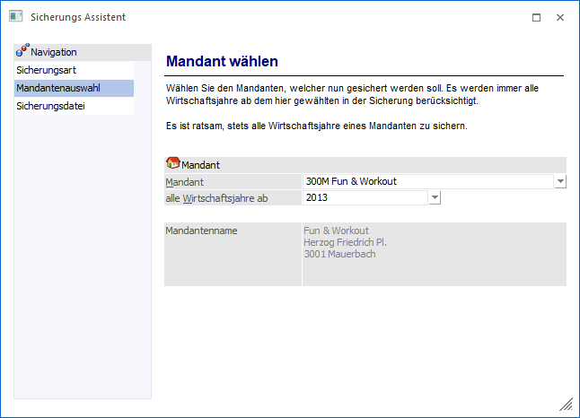

In diesem Schritt kann der zu sichernde Mandant gewählt werden.
Hinweis
Dieser Schritt steht nur dann zur Verfügung, wenn eine Mandantensicherung durchgeführt wird.

Ø Mandant
Hier muss der Mandant gewählt werden, der gesichert werden soll. In der Auswahlliste werden alle Mandanten angezeigt, welche im System bearbeitet werden können. Nach Auswahl des Mandanten wird der Name und die Adresse des Mandanten unter "Mandantenname" angezeigt.
Ø alle Wirtschaftsjahre ab
Neben dem Mandanten kann hier gewählt werden, welche Wirtschaftsjahre gesichert werden sollen. Aus der Auswahlliste kann hierfür gewählt werden, ab welchem Wirtschaftsjahr gesichert werden soll. Standardmäßig wird immer das früheste Wirtschaftsjahr vorgeschlagen, so dass alle Wirtschaftsjahre gesichert werden.
Hinweis
Die Option steht nur zur Verfügung, wenn im Mandanten mehrere Wirtschaftsjahre gespeichert sind.
Achtung
Wenn mehrere Jahre eines Mandanten in der Datenbank existieren, sollten mindestens die letzten beiden Jahre und nicht nur das aktuelle Wirtschaftsjahr gesichert werden. Es kann sonst zu Dateninkonsistenzen kommen, wenn Änderungen in Vorjahren vorgenommen werden und anschließend eine Rücksicherung des aktuellen Jahres erfolgt.
Wird nur das aktuelle Wirtschaftsjahr gesichert, obwohl mehrere Jahre für den Mandanten in der Datenbank existieren, kommt eine entsprechende Warnung.
Durch Anklicken des Buttons "Vor" gelangt man in den nächsten Schritt. Durch Anklicken des Buttons "Zurück" kann die Art der Sicherung verändert werden. Alternativ hierzu können die Schritte über die Navigation gewählt werden.